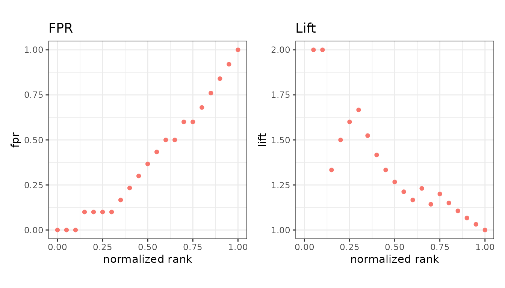

evalmod(mode = "basic") evaluates metrics at every
cutoff of the score, rather than at one arbitrary threshold. This page
is the map; each family has its own short page.
library(precrec)
library(ggplot2)
points <- evalmod(
scores = P10N10$scores, labels = P10N10$labels,
mode = "basic"
)The default fourteen
These are calculated whenever you ask for
mode = "basic", and each gets a panel in the default
plot.
| Metric | Short | Page |
|---|---|---|
score |
score |
The score itself, for reference |
label |
label |
The observed label, for reference |
error |
err |
Confusion-matrix rates |
accuracy |
acc |
Confusion-matrix rates |
specificity |
sp |
Confusion-matrix rates |
sensitivity |
sn |
Confusion-matrix rates |
precision |
prec |
Confusion-matrix rates |
npv |
npv |
Confusion-matrix rates |
balanced_accuracy |
bacc |
Agreement and balance |
fscore |
fscore |
Agreement and balance |
mcc |
mcc |
Agreement and balance |
kappa |
kappa |
Agreement and balance |
informedness |
infm |
Agreement and balance |
markedness |
mkd |
Agreement and balance |
The seventeen you ask for
Each of these is another vector the size of your dataset and another panel in the plot, so they are left out unless named.
| Metric | Also known as | Page |
|---|---|---|
fpr |
fall |
Confusion-matrix rates |
fnr |
miss |
Confusion-matrix rates |
false_discovery_rate |
fdr, pcfall
|
Confusion-matrix rates |
false_omission_rate |
for, pcmiss
|
Confusion-matrix rates |
predicted_positive_rate |
ppr, rpp
|
Confusion-matrix rates |
predicted_negative_rate |
pnr, rnp
|
Confusion-matrix rates |
lift |
Ranking and cost | |
odds |
odds_ratio |
Ranking and cost |
positive_likelihood_ratio |
lrp |
Ranking and cost |
negative_likelihood_ratio |
lrn |
Ranking and cost |
mi |
mutual_information |
Ranking and cost |
chisq |
Ranking and cost | |
cost |
Ranking and cost | |
sar |
Ranking and cost | |
roc_dist |
Agreement and balance | |
sedi |
Agreement and balance | |
jaccard |
jacc |
Confusion-matrix rates |
Asking for them
metrics = names the extra metrics. The default fourteen
are always kept, so nothing that worked before changes.
extra <- evalmod(
scores = P10N10$scores, labels = P10N10$labels,
mode = "basic", metrics = c("fpr", "lift")
)
autoplot(extra, c("fpr", "lift"))
metrics = "all" asks for every metric at once.
Any of the names in the tables above works wherever a metric is named
- in metrics =, in plot() and
autoplot(), and on either axis of metric_curve(). Names
given to these metrics by other tools are accepted too, so a call
written against ROCR keeps working.
Not on this page
These have their own functions rather than a column in the table above:
-
AUC and other curve summaries -
auc(),pauc(),auc_ci(),prbe(),average_precision() -
Probability-based metrics -
prob_metrics(), for scores that are genuine probabilities, and the D2 scores that rescale its losses against a null model -
Classification
report -
classification_report(), precision, recall and F-score per class at one operating point you choose
Coming from another package? Comparison with other tools maps the names across and shows where the numbers differ.